Profil Singkat
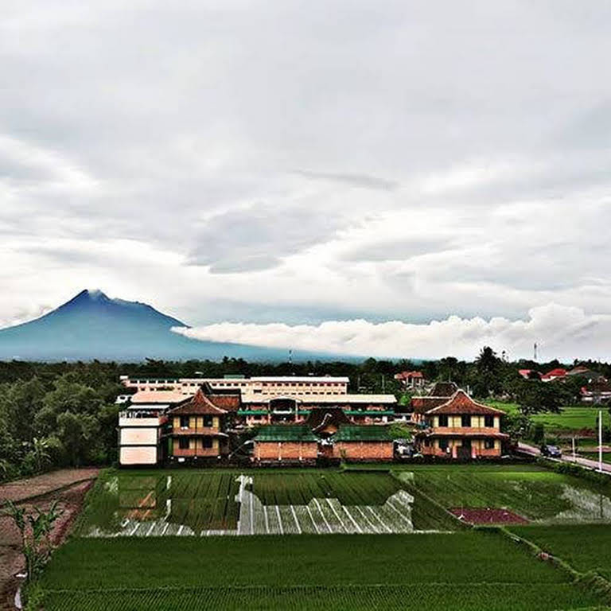
Sekolah Menengah Pertama Islam Terpadu Baitussalam adalah sekolah Islam Terpadu setingkat SLTP yang berdiri pada tahun 2007. Perintisnya adalah bapak KH Abdul Hakim AKA, Ibu Suprihantini, S.Si.Apt., Ibu Nur Hasanah, M.Ag. bapak Muhammad Hamdan, bapak Qomaruddin, Ibu Ririn Setyaningsih S.Sos, bapak Adhy Pratomo YH. S,Pd.T, bapak Arif Rahman S.Pd, dan Ibu Baety Susi Hakimiyah, S.Pd. Mereka biasa disebut Tim Sembilan. SMPIT Baitussalam berdiri sebagai bagian tahap pengembangan Pondok Pesantren Modern Baitussalam di bawah Yayasan Nidaau at-Taqwa.
Kemajuan zaman yang begitu cepat dan persaingan global yang semakin dahsyat menuntut generasi muda Islam harus memiliki bekal ilmu pengetahuan agama dan ilmu pengetahuan umum yang seimbang.
Kematangan Imtaq dan Iptek merupakan syarat mutlak untuk memenangkan persaingan di segala bidang. Menjawab kebutuhan tersebut maka didirikanlah SMPIT Baitussalam. yang merupakan Sekolah Menengah Pertama Islam Terpadu yang memadukan kurikulum kepesantrenan dan kurikulum Diknas memberikan pola pendidikan berbasis kompetensi dengan porsi 60% praktikum/penelitian ilmiah dan 40% teori, sehingga dengan demikian akan dihasilkan lulusan yang cerdas, disiplin, memiliki kematangan kepribadian, memiliki kecakapan hidup dan terampil dalam berbahasa Arab/Inggris maupun dalam keilmuan lainnya.
SMPIT Baitussalam merupakan aplikasi dari kekhawatiran orangtua terhadap lingkungan pergaulan, sehingga menerapkan sistem pesantren. Asrama adalah bagian dari proses pembinaan dan pembentukan karakter siswa. Dengan pendampingan selama dua puluh empat jam diharapkan siswa dapat mengembangkan IQ, EQ dan ISQ.
Gallery Photo
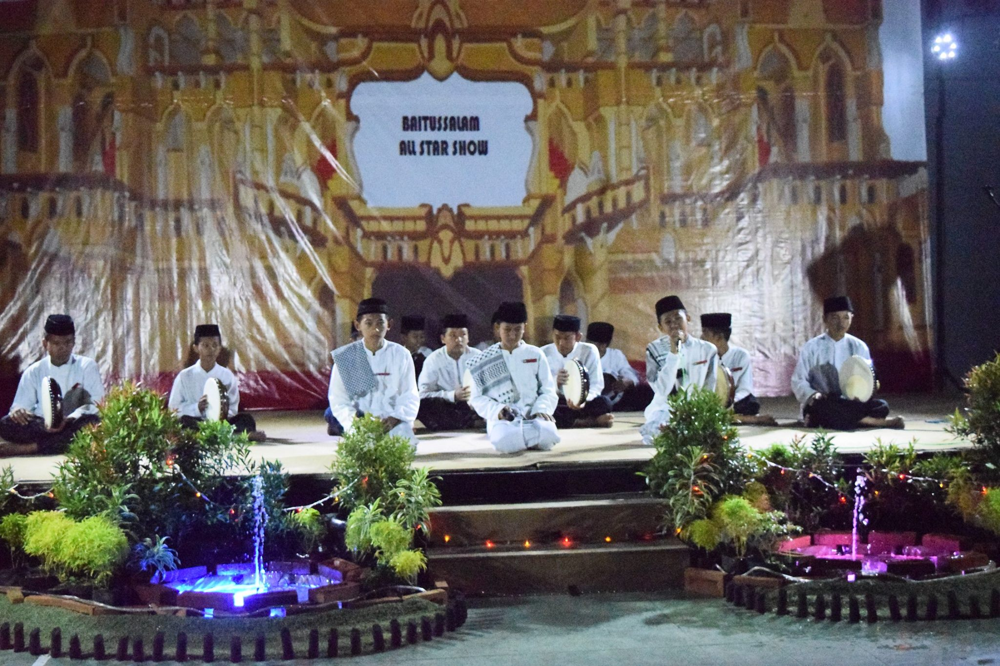
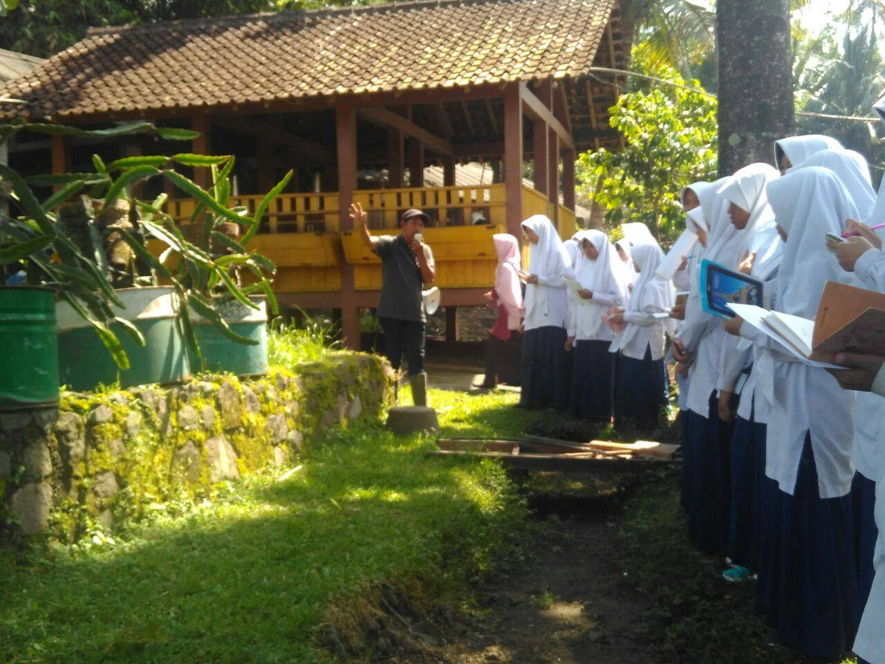
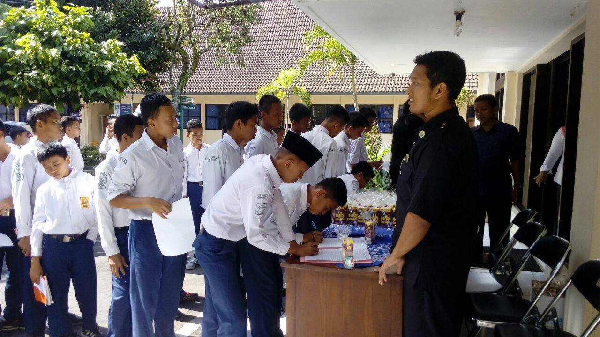
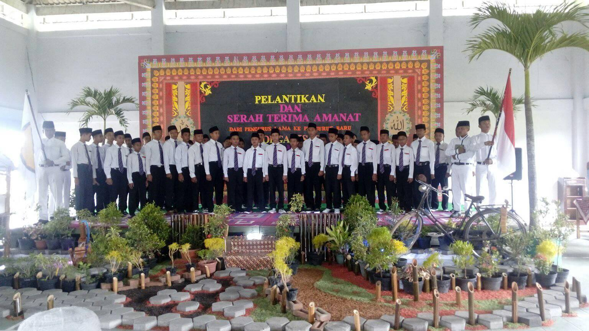
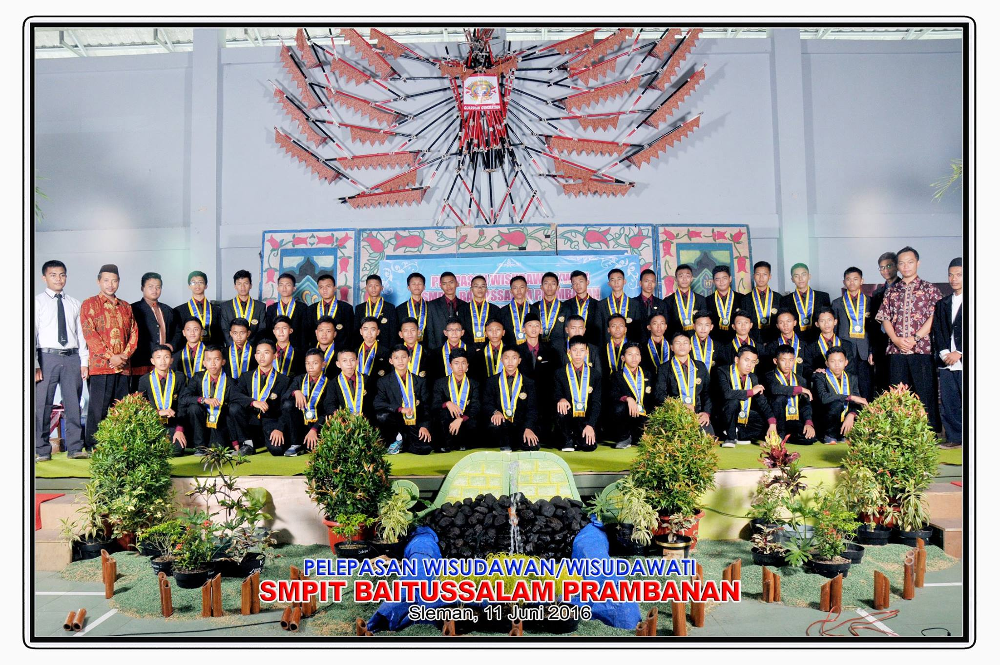
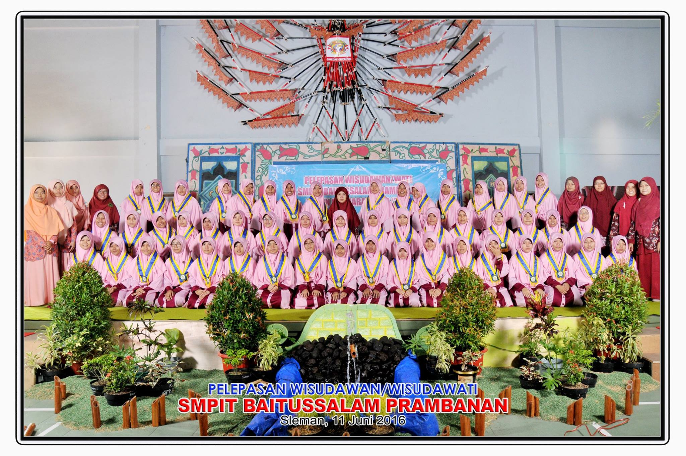
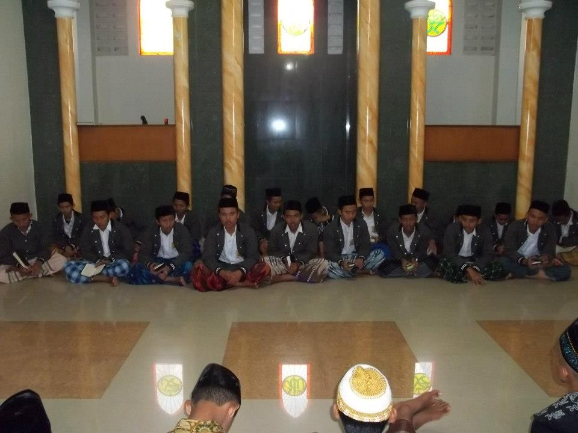
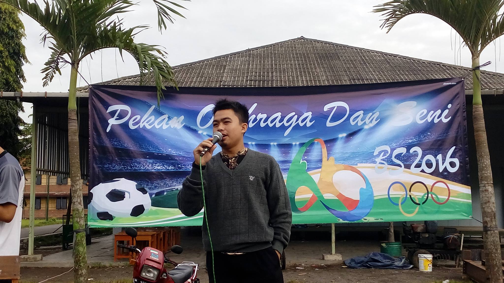
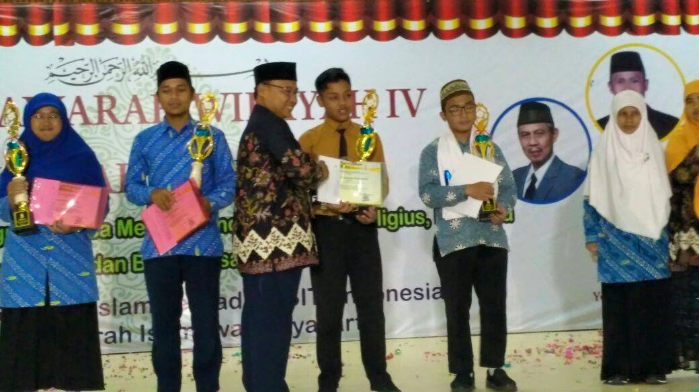
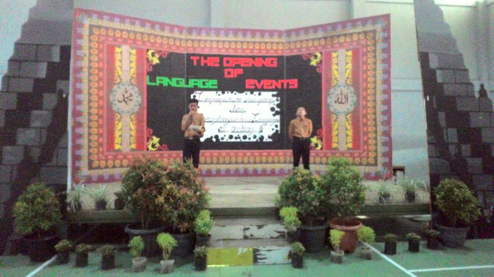
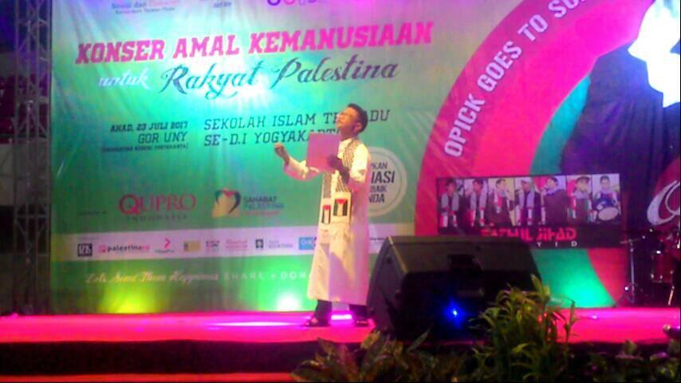
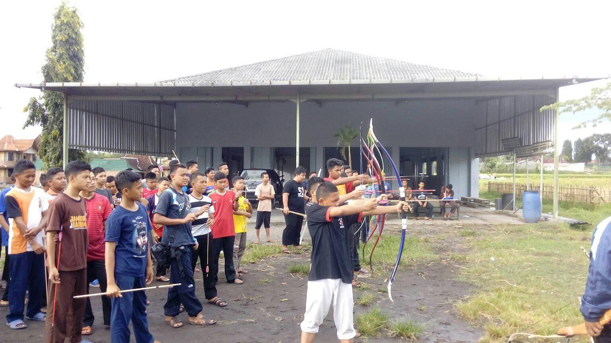